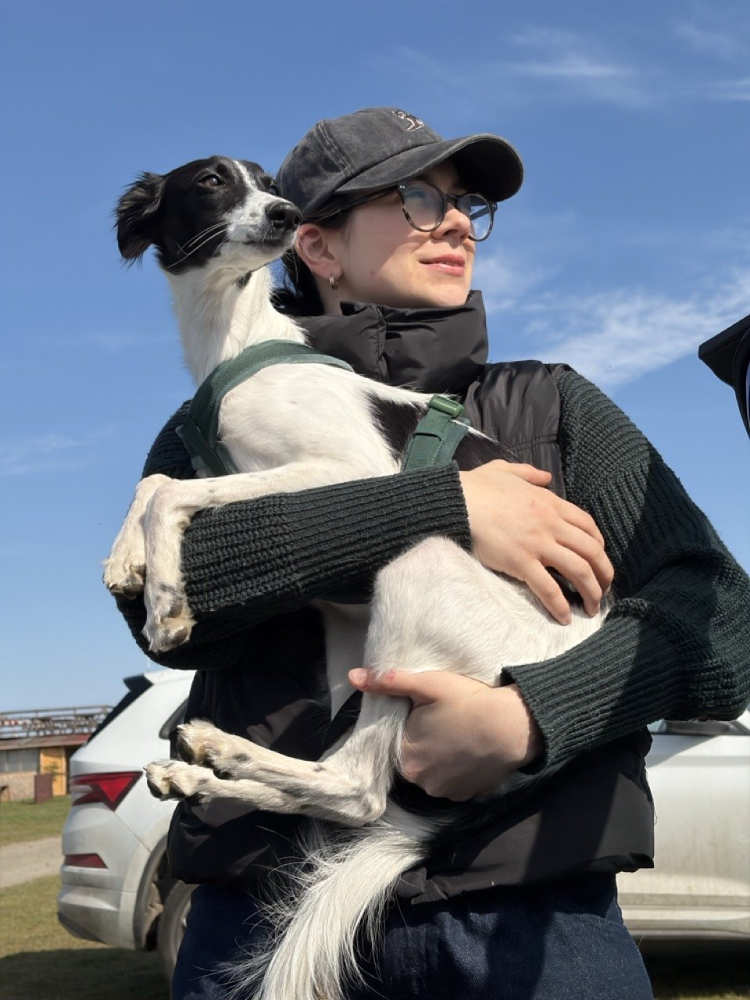

Data · Prague · a series in five parts
Prague,
measured
Studies of one city from the data it publishes about itself: how its City Assembly votes, how its precincts vote in national elections, how it funds its districts, how housing moves from permit to completion, and how it prices kerb space.
Photo: ŠJů · CC BY-SA 3.0, toned

Data · pop music · a series in six parts
Pop,
measured
Five artists measured the same way, from Spotify's charts and their tours. Hits charted longer where people speak their language, most of all one Spanish song, and tickets barely follow local incomes.
Photo: Anthony Delanoix · CC0, toned
Master's thesis · IES Director's Award 2026
Persistence
On 121 million vehicle-location records from Prague, within-day bus and tram delays are persistent, and for a traveller who can observe the current delay state, standard appraisal overstates the cost of unreliability.
Photo: Draceane · CC BY-SA 4.0, toned
.jpg){kind=link}
Photo: rawpixel · CC0, toned

About
Data and cloud engineer, Prague
Barbora Šandová is a data and cloud engineer at Alma Career in Prague, where she works on a cross-cloud data platform and on LLM assistants over its warehouse. Her research interests are the applied econometrics of urban systems and the evaluation of LLM systems that answer questions over data. Her master's thesis on the persistence of public transport delays in Prague received the IES Director's Award for Distinguished Theses at Charles University in 2026. CV
All work
Series
Several studies on one subject, each part registered on its own.
- Prague, measuredHub · series of fivepublished29 Sep 2026
- Part 1 · Votes against in Prague's City Assembly, 2010–2026Researchregistered study28 Sep 2026
- Part 2 · Housing estates and the 2025 vote in Prague's precinctsResearchexploratory, design before modelling28 Sep 2026
- Part 3 · City grants to Prague's 57 districts and party alignmentResearchregistered study28 Sep 2026
- Part 4 · New housing in Prague: permits, completions and the metroResearchregistered study28 Sep 2026
- Part 5 · Longer cars and Prague's paid kerbResearchregistered study29 Sep 2026
- Pop, measuredHub · series of sixpublished2 Oct 2026
- Part 1 · Harry Styles: how long a hit lasts, where, and what a ticket costsResearchregistered study2 Oct 2026
- Part 2 · Taylor Swift: a catalogue that sells out everythingResearchregistered study2 Oct 2026
- Part 3 · BTS: a catalogue, not a hitResearchregistered study2 Oct 2026
- Part 4 · Bad Bunny: a long hit, everywhere at onceResearchregistered study2 Oct 2026
- Part 5 · Billie Eilish: two long hits, five years apartResearchregistered study2 Oct 2026
- Part 6 · Together: hits charted longer where the language matchedResearchexploratory2 Oct 2026
Research
A question, a design and inference, with data and code.
- Eurovision, not Brussels? Diaspora, juries and the EU in Eurovision votesResearchregistered study3 Oct 2026
- When the clocks go back: evening darkness and pedestrian crashes in CzechiaResearchregistered study3 Oct 2026
- Does a concert move the charts? Harry Styles's first tour on SpotifyResearchregistered study2 Oct 2026
- What a Czech film fund grant changes at the cut-off, 2016–2021Researchregistered study1 Oct 2026
- What a lottery player can choose: Sportka 1994–2026 and Eurojackpot 2025–2026Researchexploratory29 Sep 2026
- Can a wrong number be seen coming?Research · Quaesitorexploratory15 Sep 2026
- QuaesitorResearch · AI over dataretired14 Sep 2026
Theses and coursework
Written for a degree or a course, dated when they were written.
Tools
Public code with tests and a worked example.
Notes
Dated descriptive or creative pieces that make no inferential claim.
- What Prague's 2026 programmes can do in one termNotenote1 Oct 2026
- Forecast verification: protocolNoteprotocol, no results yet29 Sep 2026
- Delayed All the Time: Prague public transport as soundNote · sonificationnote14 Sep 2026
- The Atlantic, playedNote · sonificationnote15 Sep 2026
- Colour and sound in 47 Czech YouTube ad spots, and the language of 24 brand homepagesNotenote14 Sep 2026
- An LLM assistant over a data warehouse: design notesNotenote17 Sep 2026
- A wiki that an agent keepsNotenote14 Sep 2026
- FilmRunner, an offline call sheetNotenote14 Sep 2026